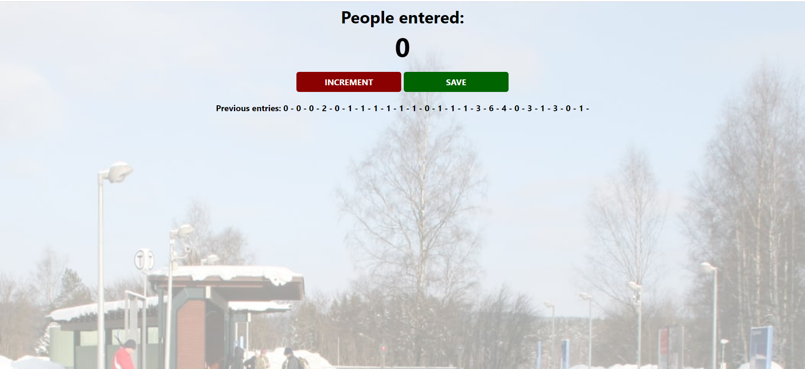
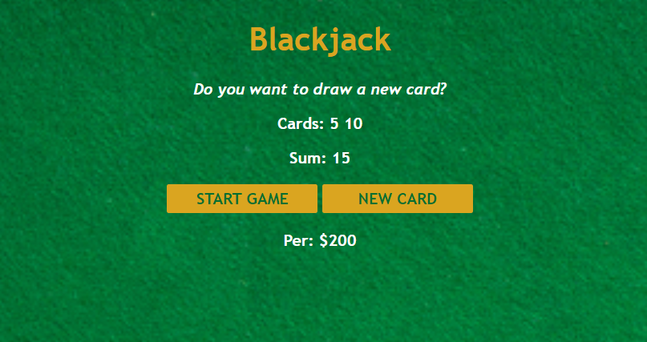

Web Developer
Hello, I'm Praveen Sonesha, a passionate student pursuing a Bachelor of Engineering (BE) degree in Information Technology at Vidyalankar Institute of Technology in Mumbai. My educational journey has been focused on mastering the art of technology, particularly in the realm of web development.
Build a basic web-based counter using HTML, CSS, and JavaScript. Click the "Increment" button to increase the count or hit "Save" to save the count and reset increment to zero.
The Blackjack Game project is an interactive web-based card game that brings the excitement of the casino to your web browser. Built using HTML, CSS, and JavaScript, this project offers a digital rendition of the classic Blackjack card game. Players can test their luck and skill as they try to beat the dealer and reach a hand value of 21 without going over. The game features a user-friendly interface, responsive design, and captivating animations, making it an engaging and enjoyable experience for both novice and experienced Blackjack enthusiasts. Challenge yourself to win big or simply practice your card-counting strategies with this fun and addictive online Blackjack game. Have a great time trying to outsmart the dealer and hitting those winning hands!
Download my resume in PDF format: Resume.pdf
Email: praveen.sonesha@vit.edu.in
Phone: +919987486138